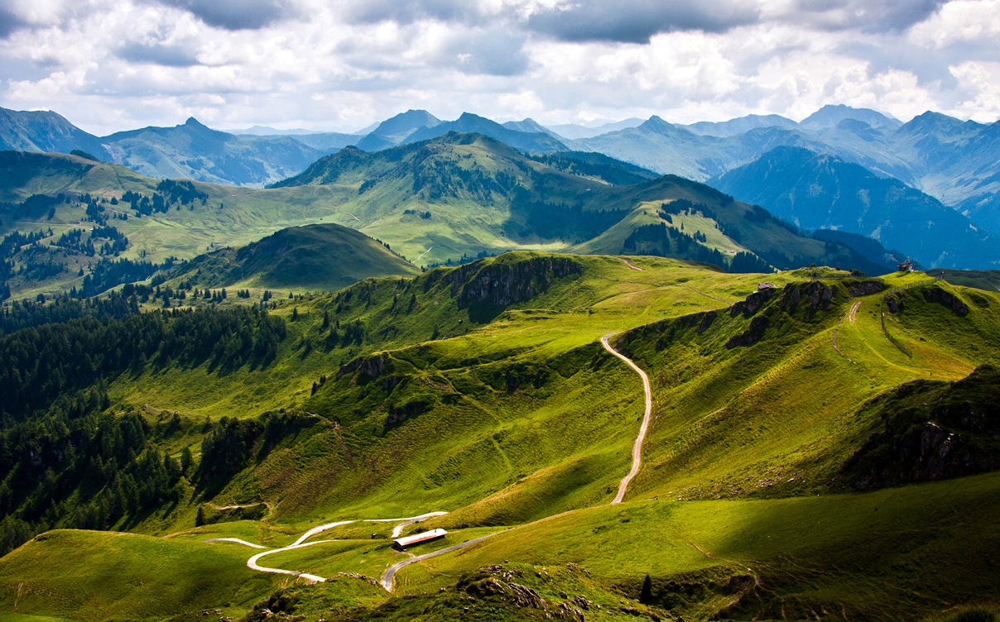

Гори

Гори формуються силами, які впливають на гравітаційний баланс шляхом підняття порід.
Цей дисбаланс зумовлює підвищення рельєфу шляхом ізостатичної компенсації і потовщення земної кори.
Окрім вершини, гора складається з основи і кореня, утворених складками
геологічних шарів: основа і корінь мають потужність більшу, ніж висота вершини.
Глибину коренів можна оцінити через гравітаційну аномалію, яку вона породжує .

Грампіанські гори,Грампіани — три гірських пасма в центральній Шотландії, що простягаються
з південного заходу на північний схід. Найвища точка гір і всієї Шотландії гора Бен-Невіс 1344 м.
Виділяється район гор Карнгорм з вершиною Бен-Макду 1 309 м. Гори складаються з граніту, гнейсів,
мармуру та кварциту. На півночі гори відділяє від Північно-західного Шотландського нагір'я ущелина Грейт-Глен
з низкою глибоких вузьких озер Лох-Несс, Лох-Лохі.На півдні гори зриваються уступами до рифтової долини Шотландської низовини.
Пришедшее к нам в далеком прошлом слово «Карпаты»
переводится с армянского как «каменная стена»
что лучшим образом описывает этот легендарный горный массив.
Расположившись на западе Украины, горы граничат с Румынией,
Венгрией, Словакией и Польшей. Сразу пять государств
имеют возможность любоваться и наслаждаться величием природы, отобразившемся в камне.
- Граничне песмо
- Пасмо Полонин
- Високий Діл
- Пасмо Лопеніка і Дурней
Увесь південь Польщі - це гори. І всі вони - Карпати.
Тільки у різних регіонах їх називають по-різному: Судети,
власне Карпати з передовою грядою Західного і Східного Бескиду.
Судети, розташовані вздовж кордону Польщі і Чехії, являють собою ряд невисоких гір.
На схід від Моравських Воріт розташовані Карпати. Ці гори загалом вище Судет;
в районі Високих Татр їх максимальна висота 2499 м. Тільки Високі Татри в Польщі
мають гострі гірські піки, глибокі ущелини і льодовикові форми рельєфу в гребеневій зоні.
Тут є прекрасне гірське озеро Морське око.
Більш низькі ланцюги Карпат, звані Бескидами, мають округлі форми
і в значній частині покриті лісами. Північніше за ланцюг
гір виділяються Сілезія і Мала Польща. Обидва райони мають горбистий рельєф.
У Підкарпатському воєводстві - гори Бєщади.
Карпати — один із головних вододілів Європи між Балтійським і Чорним морем.
Поділяються на дві субпровінції —Зовнішні Карпати і Внутрішні Карпати.
Орографічно виділяють Західні Карпати ольщі та, Східні, або Лісисті, Карпати
найбільш знижена і звужена частина Карпат; Східні Карпати складаються
зіСхідних Бескидів, Українських Карпат і Молдово-Семиградських Карпат,
Південні Карпати, або Трансильванські Альпи.
Лише наприкінці мезозойської ери океан відступив, і на його місці
почали виникати гори, рівнини і морські западини. Вважається,
що басейн Середземного моря і глибоководдя Чорного і Каспійського морів
є його залишками. Решта територій протягом мезозойської і кайнозойської
були охоплені формуванням гірського ланцюга, до складу якого входять
Апеніни, Піренеї, Альпи, Карпати, Балкани, Крим, Кавказ, Памір та ін.
Цей грандіозний гірський ланцюг, витягнутий у широтному напрямку, складає
альпійський складчастий пояс. В його межах Карпати займають одне з центральних положень.
Зо́внішні Карпа́ти — зовнішня північно-західна, північна,
північно-східна і східна частина Карпат, у тому числі Українських Карпат.
У межах України розташовані в Львівській, Закарпатській, Івано-Франківській
та Чернівецькій областях. Простягаються з північного заходу на південний схід
смугою завдовжки 260—280 км і завширшки 30—40 км. До цієї частини Карпат належать
Східні Бескиди, Зовнішн Ґорґани та Покутсько-Буковинські Карпати. Переважні висоти 800—1000 м, максимальна —1836 м.
що складаються з флішу. Геоструктурно відповідають Скибовому покриву та Кросненській зоні.
Розчленовані долинами річок Стрию, Свічі, Пруту, Черемошу, Серету тощо.